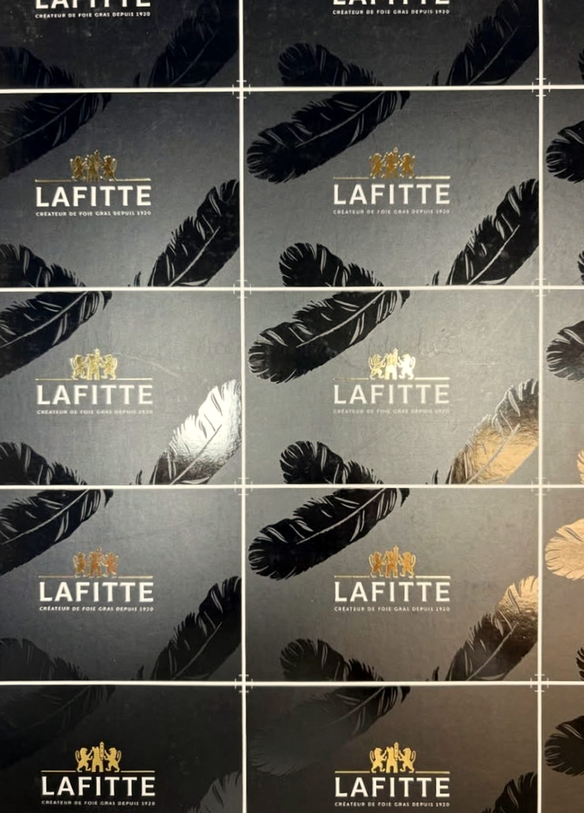
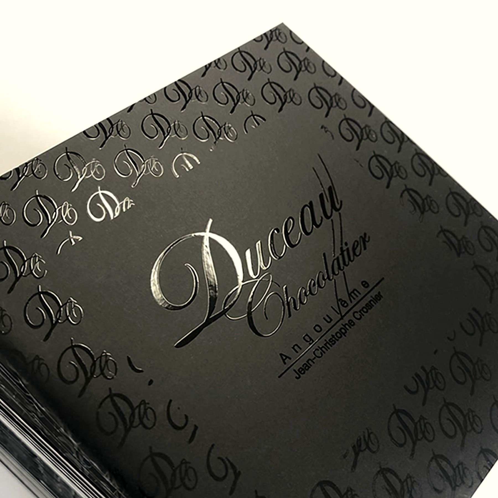

Ennoblissement du packaging et de l'imprimé
Dorure à chaud, gaufrage, découpe, pelliculage et vernis sélectif. Nous donnons à vos étuis, coffrets, étiquettes et cartes l'éclat et le relief que vos clients remarquent au premier toucher.
Un emballage se jugeen quelques secondes.
Lumière
Dorure à chaudCinq finitions.Un seul atelier.
Nos savoir-faire
Cinq finitions, un seul atelier
Choisissez une finition pour découvrir
Chaque technique se suffit à elle-même ou se combine aux autres sur une même pièce : une dorure posée sur un gaufrage, un vernis sélectif sur un pelliculage mat, une découpe qui laisse apparaître l'intérieur d'un coffret.

Dorure à chaud
Un logo ou un motif qui accroche la lumière, à plat ou en dorure galbée.
75 × 105 cm maximumDécouvrir
Gaufrage
Un motif qui se sent sous les doigts, en relief ou en creux.
75 × 105 cm maximumDécouvrir
Découpe
Des contours nets et une forme précise.
64 × 90 cm maximumDécouvrir
Pelliculage
Mat, brillant ou toucher velours, pour protéger et changer la tenue en main.
75 × 105 cm maximumDécouvrir
Vernis sélectif
Un contraste mat et brillant là où vous voulez attirer le regard.
72 × 102 cm maximumDécouvrir
Pour les marques les plus exigeantes
Nous travaillons uniquement pour les imprimeurs qui fabriquent les emballages et imprimés, là où la finition prend toute son importance.


Des finitions préparées et contrôlées à la main
Vous nous envoyez votre fichier et votre support. Nous préparons la fabrication, réglons la machine sur votre papier et contrôlons la série jusqu'à la livraison.
Découvrir l'atelierComment ça se passe ?
Un circuit simple entre votre atelier et le nôtre.
Devis
Vous décrivez votre projet, nous chiffrons la finition.
Réception de vos feuilles
Vos imprimés arrivent à Morlaas, prêts à ennoblir.
Production
Préparation, calage et contrôle de la série.
Retour
Les feuilles finies repartent vers votre atelier.
Questions fréquentes
Les réponses aux questions techniques que l'on nous pose le plus. Pour la préparation des fichiers, consultez notre guide.
Quels supports pouvez-vous ennoblir ?
Le papier et le carton compact, de 0,1 à 1,8 mm d'épaisseur.
Quels sont les formats maximum ?
75 × 105 cm en dorure à chaud, gaufrage et pelliculage, 72 × 102 cm en vernis sélectif et 64 × 90 cm en découpe.
Quelle finesse de trait en dorure ?
0,3 mm minimum pour un trait plein et 0,5 mm minimum pour un trait en réserve.
Quels films de dorure proposez-vous ?
Plus de 50 teintes en stock : or, argent, cuivre, couleurs, effets mats, brillants ou holographiques. Chaque film existe en plusieurs qualités de colle, pour bien accrocher sur votre support.
Quel est le délai ?
Comptez en moyenne 1 à 2 semaines, transport compris.
Faites-vous des essais ?
Oui, pour les dossiers techniques : nouveau support, combinaison de finitions, motif très fin. L'essai permet de valider le rendu avant la série.
Comment préparer mes fichiers ?
Un fichier vectoriel, un calque par finition et des traits de coupe. Tout est détaillé dans notre guide de préparation des fichiers.
Composez votre demande de devis
Décrivez votre projet et joignez votre fichier : nous revenons vers vous avec un devis.